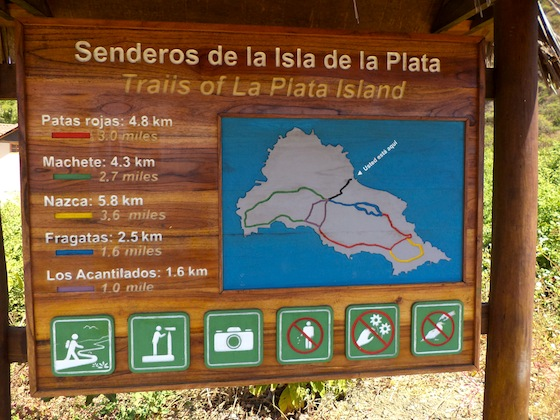

Isla de la Plata is home to many peculiar birds: blue-footed, red-footed, and Nazca boobies, magnificent frigatebirds, waved albatrosses, tropicbirds and peruvian pelicans. Isla de la Plata has established trails that a guide will walk you through. Afterwards, most tour companies serve lunch and allow you to snorkel.
If you bump into whales, dolphins, or orca to or from the island the captain will stop so you can observe them.
In the morning, your tour boat will take off from the beach towards Isla de la Plata. If the captain sees whales or dolphins he will change course and approach them for observation. Depending on their behavior some time may be dedicated to this. A wonderful bonus! A fruit snack may be served as well.
When you reach the island you will disembark and have an opportunity to use the restroom. Before you begin your trek your group and guide will agree on which trail(s) you will walk. You must stay as a group the entire time, so you may not split off and follow your own path. This is done to protect you and the wildlife, which can get unusually close.
Once you finish the trek you will board the boat and lunch will be served as you travel to another part of the island to enjoy some snorkeling. A mask and snorkel will be provided to you, but if you wish to use fins you will have to rent these ahead of time or bring your own. Also, the waters become colder during the high season, so a rash guard won't hurt. Even if you don't enter the water, turtles may stop by to visit and you may see the occasional giant manta ray fin popping out of the surface.
Again, if the captains spots whales or other sea creatures on your return he will stop so you may observe them.
Ten tour agencies in Puerto Lopez are licensed to make guided tours to Isla de la Plata. Depending on the boat it can take between 50 minutes and 1.5 hours.
A trip to Isla de la Plata from Puerto Lopez costs between $30-$45 USD depending on whether or not it is high season.
During low season (October-May) some of these agencies form a cooperative to maximize use of resources, so if a couple books a trip with one agency, they may end up going on another boat because it is that respective agency's turn. However, if you are coming as a large group (~10) you may negotiate with individual agencies to receive a group rate. Of course, during high season (June-September) there is more than enough business to go around. It is highly recommended you make reservations if you plan visiting during this time as a group.
As of February 2012 you no longer need to purchase a permit to enter Los Frailes, Isla de la Plata, or Machalilla National Park.